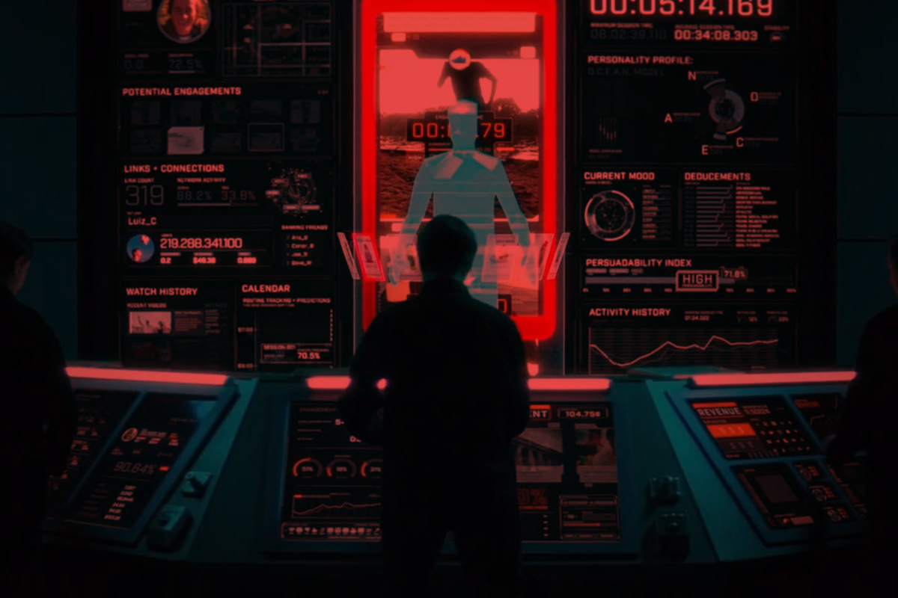

هذه المقولة المشهورة انذكرت بالفيلم الوثائقي (The Social Dilemma)، والذي تحدث عن الكثير من فضائح السوشيال ميديا. في بعض الاحيان نبحث عن شي أو نخزنه على شكل صور في اجهزتنا، وبعد فترة قصيرة يظهر على شكل إعلان بالفيسبوك أو غيره، لأن هذه المواقع لها القدرة على الوصول لكل بياناتنا، ومن نرجع الى مؤسسي مواقع التواصل الاجتماعي، نلقى أغلبهم يرفضون استخدامها اوحتى يمنعون أطفالهم منها ايضًا، غريبة مو؟ فالسوشيال ميديا مو مجانية مثل ما نتصور، إحنا نفسنا المنتَج. الشركات تاخذ خصوصياتنا وأسرارنا، تحللها وتربطها ببعض باستخدام أدوات متطورة، وبعدين تستغلها حتى تزيد أرباحها. ولهذا نشوفهم يطورون خدمات مثل البث المباشر والمكالمات الصوتية، مو حبًا بينا، بس حتى يجمعون بيانات أكثر. وكل ما نضيع وقت أطول على هاي التطبيقات، همَّ تزداد فلوسهم. شلون الشركات تجمع معلوماتنا؟ وشلون تستفاد منها؟ الشركات الكبيرة تراقب سلوكنا على الإنترنت، تسجل مشترياتنا، برامج الولاء، وحتى الاستبيانات. وبعدين تستغلها بـ: تخصيص الإعلانات: بدل ما يطلعلك إعلان عشوائي، يطلعلك شي أنت أصلاً دورت عليه. تطوير المنتجات: يعرفون شنو الناس تحب وشنو تتجاهل، حتى يقررون قبل لينزلون منتج جديد. التسعير: يحللون قدرتك الشرائية حتى يحددون السعر اللي يجيب أرباح أكثر. تحسين تجربة المستخدم: مثل توصيات يوتيوب أو نتفلكس اللي تناسب ذوقك وتخليك تبقى أطول وقت ممكن. ليش لازم تحمي معلوماتك زين؟ لأن حماية بياناتك تعني تحافظ على حريتك الشخصية. إذا ما حميت نفسك، الشركات ممكن تستغلك بالتتبع التجاري أو تسريب بياناتك، والأفراد مثل القراصنة والمحتالين ممكن يسرقون هويتك أو يبتزونك. فبعالم الإنترنت، هنالك وجهان لكل شيء: الوجه الأول اسمه الاستخبارات مفتوحة المصدر (OSINT)، يعني جمع وتحليل المعلومات التي تكون متاحة للكل بشكل قانوني، مثل الذي ينشر بالسوشل ميديا أو موجود بقواعد بيانات عامة. الصحفيين والمحققين يستخدمون أدوات مثل (Maltego) أو (Recon-ng) حتى يرتبون هاي المعلومات ويطلعون صورة واضحة. وهنالك مواقع جعلت العملية أسهل وأصبح من الممكن فتح شجرة تتفرع منها مواقع وأدوات تكدر تستخدمها بعملية جمع المعلومات وهو موقع (OSINT Framework): لكن الوجه الثاني أخطر، أسمه الدُوكسينغ (Doxxing) أو التشهير الإلكتروني. هنا يجمعون تفاصيل شخصية عنك – مثل عنوان بيتك أو رقم تلفونك – وينشروها علنًا حتى يستخدموها ضدك. الخطورة إن أغلب بياناتنا أصلاً موجودة على الإنترنت، قسم منها محمي وقسم مكشوف، وأي شخص يحصل عليها ممكن يستغلها. وحتى نفهم كيفية حصول هذا الشيء فلازم نعرف ان هنالك طرق مثل (Google Dorking) يتم استغلال كوكل بيها وتكشف بيها وثائق ولوحات تحكم مخفية عن طريق البحث المتقدم مثل: site:instagram.com “اسم المستخدم" يمكنك من خلالها تعرف تعليقات هذا المستخدم وعلى أي صفحة وممكن بناء صورة عنه بدون متابعته أصلاً. . وأيضًا هنالك طريقة أخرى تمكنك من البحث عن اسم معين موجود داخل ملف (PDF) منشور على موقع معين مثل: site:example.com filetype:pdf "الاسم" وهنالك (Google Dorks Cheat Sheet) يحوي على الالاف من هذه الأوامر ممكن تطلع عليها. وهناك منتديات مثل (BreachForums) التي اشتهرت بتداول قواعد بيانات مسربة مثل معلومات المواطنين لعدة دول وحسابات مسروقة، والـ (FBI) أغلقها أكثر من مرة والأخيرة كانت قبل شهرين. وبعد معرفتنا كيف يمكن للمعلومة البسيطة أن تتحول لسلاح، نأتيكم بالحل: الأمن التشغيلي (OPSEC) هذا المفهوم يعني نفكر مثل المخترقين، نبحث عن الثغرات قبل استغلالها (يعني تتغده بيهم قبل ما يتعشون بيك)، ونختار الأدوات التي تقلل من بصمتنا الرقمية. مثلًا، البريد الإلكتروني الشائع مثل Gmail يقرأ محتوى رسائلك حتى يخصصلك إعلانات، بينما ProtonMail يوفر تشفير شامل ويمنع حتى الشركة من أن تتطلع على بياناتك. بالمراسلة، واتساب يغريك بميزاته الاجتماعية لكنه يجمع بيانات وصفية كثيرة، بينما (Signal) يركز على الخصوصية ويقلل جمع البيانات. والموضوع يمتد للمتصفحات والأنظمة والهواتف. (Chrome) سريع لكن يتتبع نشاطك، أما (Firefox) ونسخه المشددة مثل (Librewolf) تعطي خصوصية أكبر. بالأنظمة، (Windows) عملي لكن أقل أمان، بينما (Tails) و(Qubes) مصممة للخصوصية والعزل الأمني ويمكنك وضع النظام على USB وتشغله كل مرة عن طريق وضع ال USB في الحاسوب وبعد ازالته ينمحي كل شيء وراه. وعلى الهواتف، (iOS) و(Android) يتتبعون موقعك ونشاطك، بينما (GrapheneOS) يقطع التتبع لكنه يحتاج خبرة تقنية ويعمل فقط على أجهزة محددة مثل (Pixel). وحتى كلمات المرور، التي غالبًا ما تكون الحلقة الأضعف، ممكن تديرها بأمان باستخدام (KeePassXC) الذي يخزنها في مشفر ويولد كلمات قوية تلقائيًا. وفي النهاية الإنترنت مثل ساحة مزدوجة: من جهة أداة قوية للبحث والتحليل عبر (OSINT)، ومن جهة ثانية ساحة خطرة إذا أهملت (OPSEC). الفرق يعتمد على وعيك واختياراتك اليومية. تذكر دائمًا: الإنترنت مو مجاني مثل ما نتصور، ثمنه هو بياناتنا. الشركات تنظر لها ك أرباح، والمخترقين يشوفوها فرصة. أول خطوة للحماية تبدأ بالوعي: لا تشارك معلوماتك بدون داعي، ولا تنسى أن المجانية على الإنترنت معناها أنت السلعة!
